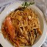

Inicio
Sobre mí
Recetas
Contacto
Otras Cosas
Fideuà

⏰
Tiempo total:
60 minutos
Ingredientes
80 g de fideos por persona
Aceite de oliva
2 dientes de ajo
1 cebolla pequeña o cebolleta
2 pimientos verdes
1 pimiento rojo
3 tomates maduros
1 calamar
150 g de rape u otro pescado consistente
150 g de chirlas
150 g de gamba arrocera
1 kg de mejillones
1.5 litros de caldo de pescado
Sal
Azafrán y colorante
Preparación
1.
Pon a hervir algo más de litro y medio de agua. Echa las gambas cuando hierva. Retíralas y cocina los mejillones 5 minutos.
2.
Pela las gambas y los mejillones, guarda las cáscaras y cuela el caldo. Reserva.
3.
Pica finamente el ajo, la cebolla y los pimientos. Escalda los tomates, pélalos, pícalos y retira las pepitas.
4.
En una paella con aceite a fuego suave, fríe las cáscaras de gambas 5 minutos. Retíralas y deja el aceite limpio.
5.
Sofríe en la paella el ajo, la cebolla y los pimientos. Añade el tomate hasta que se ablande.
6.
Añade el calamar cortado en anillas, el pescado en tacos y las chirlas. Cuando se abran, agrega los fideos y rehoga 1 minuto.
7.
Añade el caldo de pescado, sal, azafrán y colorante. Coloca las gambas y mejillones pelados. Cocina 6 minutos a fuego fuerte.
8.
Baja el fuego a la mitad y deja cocinar hasta que se absorba casi todo el caldo. Debe quedar un poco de caldo en el fondo.
9.
Tapa la fideuà con un trapo húmedo y espera 5 minutos antes de servir.
Autor: Recetas Caseras
Consejos:
Utiliza caldo de pescado casero para un sabor más intenso.
Recetas